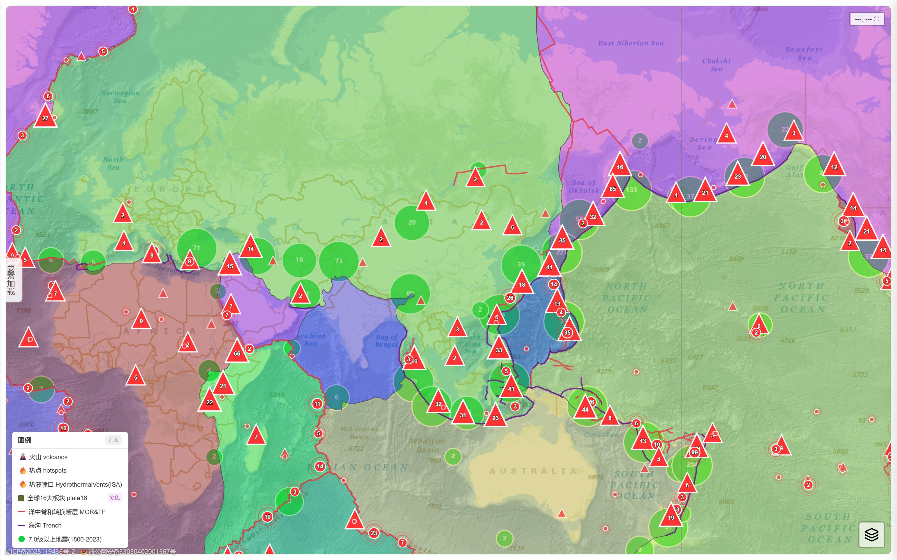
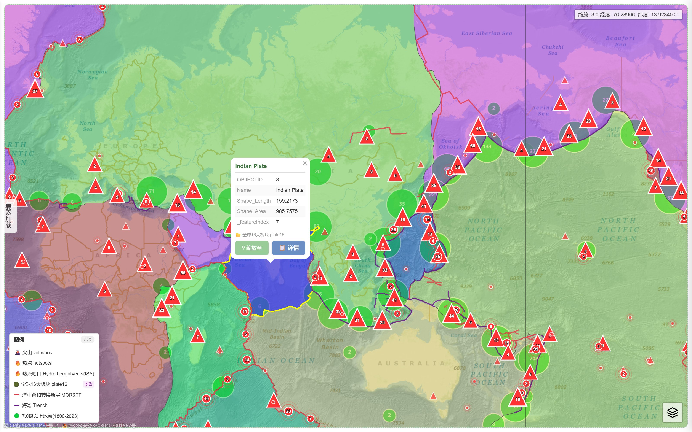
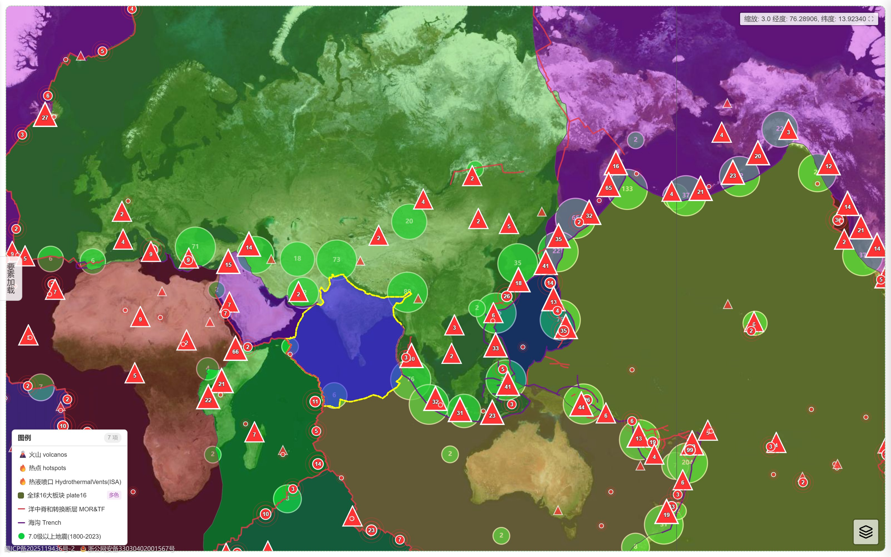
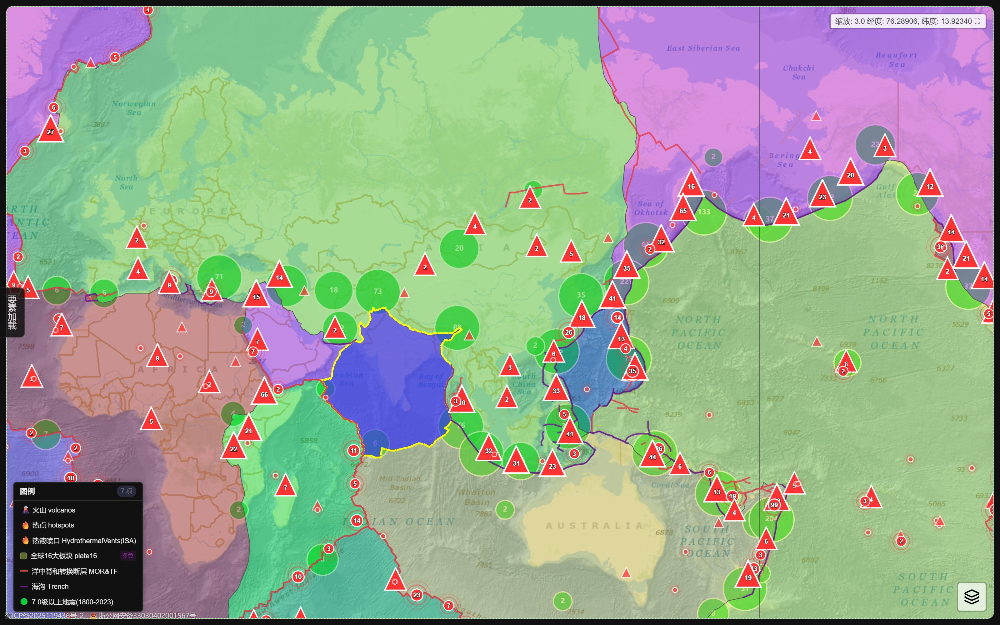
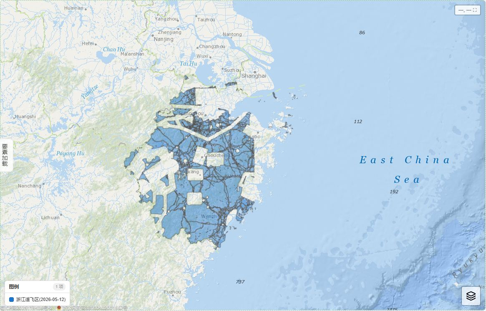

看得清海洋地质数据，
改得动一份配置文件
OGV 是一套纯静态、可离线的 WebGIS「一张图」系统：打开浏览器即可查看全球海洋地质数据， 整站换肤、迁移、加图层，只需修改一份 geo-config.js。

核心能力 · 查看数据
把分散的数据，变成一张能交互的图
点、线、面全要素渲染，海量点位流畅浏览，每一个要素都可以点开看属性 —— 数据不再是文件夹里的静态文件。
分主题图层树
板块构造、洋中脊作用域、海底基础信息、海洋地理、矿产资源、地质站位等 8 大主题分组，勾选即上图，可调透明度、颜色、标签与图标。
30+ 全球底图
天地图、ArcGIS、GEBCO 2024/2025 全系列、ETOPO、EMODnet 水深、Macrostrat 地质、OpenStreetMap，以及 Esri Wayback 历史影像时相回溯。
要素点选与搜索
点任意要素弹出属性表，一键缩放定位；顶部搜索支持地名与要素属性，URL 深链 ?focus=南海 直接飞到目标海域。
极地与 3D 视图
北极 EPSG:3413 / 南极 EPSG:3031 极球面立体投影独立视图；Cesium 3D 双视图切换，矢量数据 2D/3D 同源渲染。
数十万级点位流畅
Canvas 批量渲染 + 视口按需裁剪 + 分层简化，gzip 压缩传输、IndexedDB 本地缓存，二刷秒开。
量测与出图
距离/面积测量、坐标拾取、要素聚类、图例外挂、深浅色主题、PWA 安装后离线可用，随时截一张能用的图。






核心能力 · 迁移定制
整站定制 = 一份 geo-config.js
引擎不写死任何站点信息：标题、主题色、底图清单、图层列表、数据路径、地名深链，全部集中在一个配置文件里。 换个名字、换个颜色、换批数据，不动一行引擎代码。
- 换名换肤 —— 改
SITE_CONFIG两行，标题与全站主题色即刻生效（自动生成 hover / 深色变体）。 - 迁移数据 —— 数据可放本地目录、内网服务器或对象存储 COS/OSS，改路径配置段即可整体搬家。
- 增删图层 —— 放入一个 gzip 压缩的 GeoJSON，再在图层清单里加一行，其余全自动。
// ① 站点级：两行完成白标定制（换名 + 换主题色）
window.SITE_CONFIG = {
title: "××省海洋地质一张图",
brandColor: "#2f9e7f",
};
// ③ 图层清单：加一个图层 = 放数据文件 + 加一行
{
groupName: "海底基础信息",
layers: [
{
name: "地幔柱",
file: "plumes.geojson", // 自动补路径与 .gz 后缀
color: "#E63946",
icon: "volcano", // 内置图标，也可指定 SVG/PNG
labelField: "NAME",
},
],
}| 配置段 | 管什么 | 什么时候动它 |
|---|---|---|
SITE_CONFIG | 站点标题、品牌主题色、天地图密钥 | 做白标定制站 / 换 token |
MAP_CONFIG | 初始视野、缩放上限、无级缩放手感 | 想让客户打开就看到自家海域 |
BASEMAP_CONFIG | 底图清单、覆盖层、2D/3D 底图映射 | 接入客户自有底图服务（XYZ/WMS/ArcGIS） |
| 路径配置 | 数据从哪找（本地 / 内网 / COS） | 整体迁移、内外网双部署 |
| 图层清单 | 有哪些图层、分组、颜色、图标、标签 | 日常加数据的唯一入口 |
PLACE_REGISTRY | 地名 → 坐标注册表 | 让 ?focus=南海 这类深链直达 |

使用说明
两分钟上手
看图的人不用学，部署的人不用编译。
🗺️ 看图的人
- 显示数据：点开左侧「数据图层」，按主题分组勾选即可上图；图层行上的按钮可调透明度、缩放到图层。
- 看属性：直接点地图上的点、线、面，弹窗里看全部属性字段。
- 找位置：顶部搜索框输入地名或要素属性；分享链接可带
?focus=南海直达。 - 换底图：右下角图层控件单选底图，可再叠加地名标注、全球境界。
- 量一量：常用功能区提供测距、测面、坐标拾取与要素聚类开关。
- 极地 / 3D / 深色：在设置中切换极地投影视图、Cesium 3D 与深浅主题。
🚀 部署的人
- 纯静态托管：整个目录丢到任意静态服务器或对象存储（COS / OSS / nginx）即可运行，无需后端。
- 加图层：① 把
xxx.geojson.gz（gzip 压缩）放进数据目录；② 在geo-config.js图层清单加一行。 - 白标换肤：改
SITE_CONFIG的 title 与 brandColor，刷新即生效。 - 迁移：数据在本地、内网、COS 之间搬家，只改路径配置段。
- 发新版：修改
service-worker.js的CACHE_NAME，用户端自动弹出更新提示并重建缓存。 - 离线可用：PWA 安装后，底图与图层数据经 IndexedDB 缓存，弱网/断网仍可浏览。